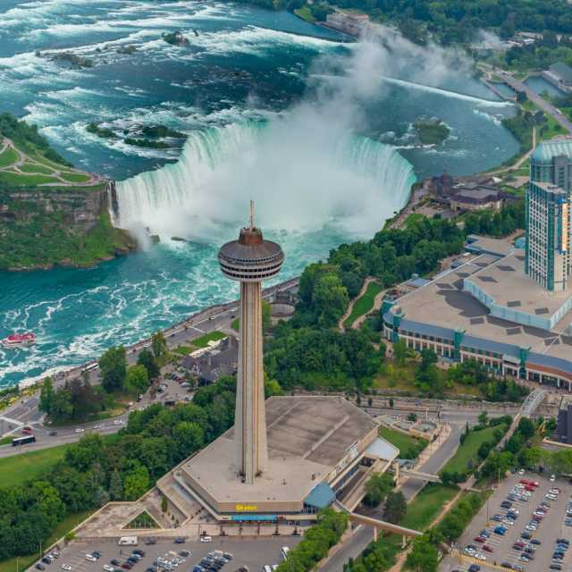
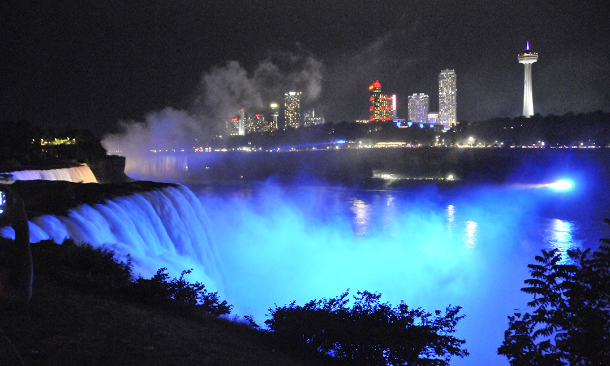

Les chutes du Niagara1 ou chutes Niagara (toponyme officiel au Canada2,3 ; en anglais Niagara Falls), sont un ensemble de trois chutes d’eau situées sur la rivière Niagara qui relie le lac Érié au lac Ontario, dans l’est de l’Amérique du Nord, à la frontière entre le Canada et les États-Unis : les « chutes du Fer-à-Cheval » (Horseshoe Falls) ou « chutes canadiennes » ; les « chutes américaines » (American Falls) ; les « chutes du Voile de la Mariée » (Bridal Veil Falls). Bien qu’elles ne soient pas particulièrement hautes (57 m), les chutes du Niagara sont très larges. Avec un débit4 de plus de 2 800 m3/s, elles sont les chutes les plus puissantes d’Amérique du NordN 1 et parmi les plus connues5 à travers le monde. Renommées pour leur beauté, les chutes du Niagara sont aussi une source immense d’énergie hydroélectrique et leur préservation est un défi écologique. Cette merveille naturelle, haut-lieu du tourisme depuis plus d’un siècle, est partagée par les villes jumelles de Niagara Falls (New York) aux États-Unis et Niagara Falls (Ontario) au Canada.
Les chutes du Niagara1 ou chutes Niagara (toponyme officiel au Canada2,3 ; en anglais Niagara Falls), sont un ensemble de trois chutes d’eau situées sur la rivière Niagara qui relie le lac Érié au lac Ontario, dans l’est de l’Amérique du Nord, à la frontière entre le Canada et les États-Unis : les « chutes du Fer-à-Cheval » (Horseshoe Falls) ou « chutes canadiennes » ; les « chutes américaines » (American Falls) ; les « chutes du Les chutes du Niagara Voile de la Mariée » (Bridal Veil Falls). Bien qu’elles ne soient pas particulièrement hautes (57 m), les chutes du Niagara sont très larges. Avec un débit4 de plus de 2 800 m3/s, elles sont les chutes les plus puissantes d’Amérique du NordN 1 et parmi les plus connues5 à travers le monde. Renommées pour leur beauté, les chutes du Niagara sont aussi une source immense d’énergie hydroélectrique et leur préservation est un défi écologique. Cette merveille naturelle, haut-lieu du tourisme depuis plus d’un siècle, est partagée par les villes jumelles de Niagara Falls (New York) aux États-Unis et Niagara Falls (Ontario) au Canada.
Les chutes du Niagara ou chutes Niagara (toponyme officiel au Canada2,3 ; en anglais Niagara Falls), sont un ensemble de trois chutes d’eau situées sur la rivière Niagara qui relie le lac Érié au lac Ontario, dans l’est de Les chutes du Niagara l’Amérique du Nord, à la frontière entre le Canada et les États-Unis : les « chutes du Fer-à-Cheval » (Horseshoe Falls) ou « chutes canadiennes » ; les « chutes américaines » (American Falls) ; les « chutes du Voile de la Mariée » (Bridal Veil Falls). Bien qu’ellesles « chutes américaines » ne soient pas particulièrement hautes (57 m), les chutes du Niagara Les chutes du Niagara sont très larges. Avec un débit4 de plus de 2 800 m3/s, elles sont lesles « chutes américaines » chutes les plus puissantes d’Amérique du NordN 1 et parmi les plus connues5 à travers le monde. Renommées pour leur beauté, les chutes du Niagara sont aussi une source immense d’énergie hydroélectrique et leur préservation Les chutes du Niagara est un défi écologique. Cette merveille naturelle, haut-lieu du tourisme depuis plus d’un siècle, est partagée par les villes jumelles de les « chutes américaines »Niagara Falls (New York) aux États-Unis et Niagara Falls (Ontario) au Canada.

Image des Chutes 1
Image des Chutes 2
Image des Chutes 3